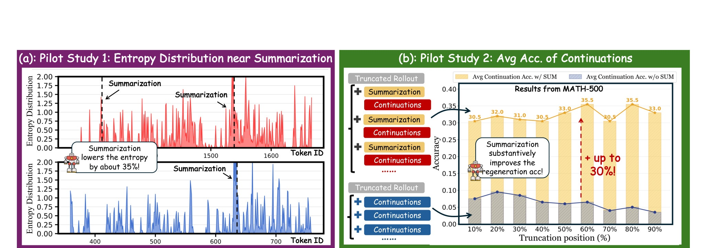
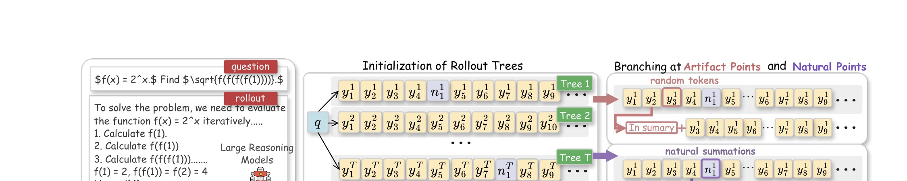
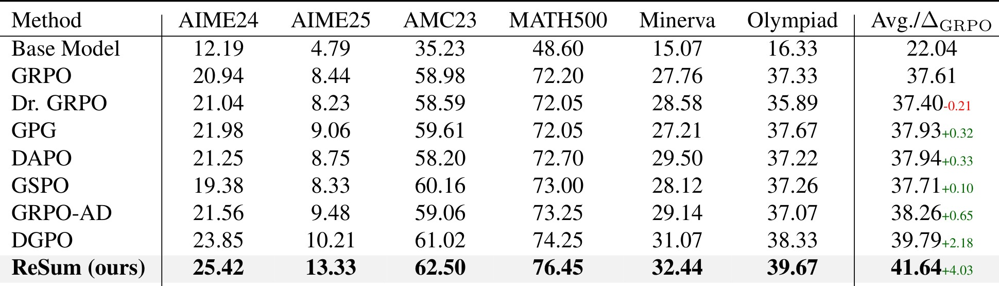
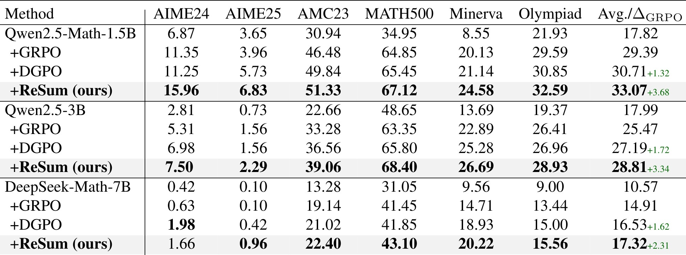
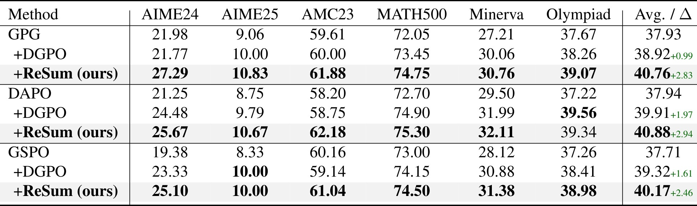
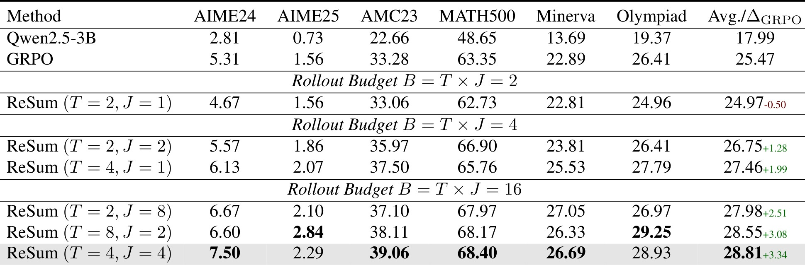
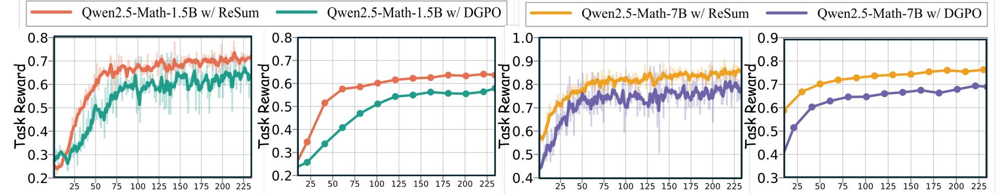
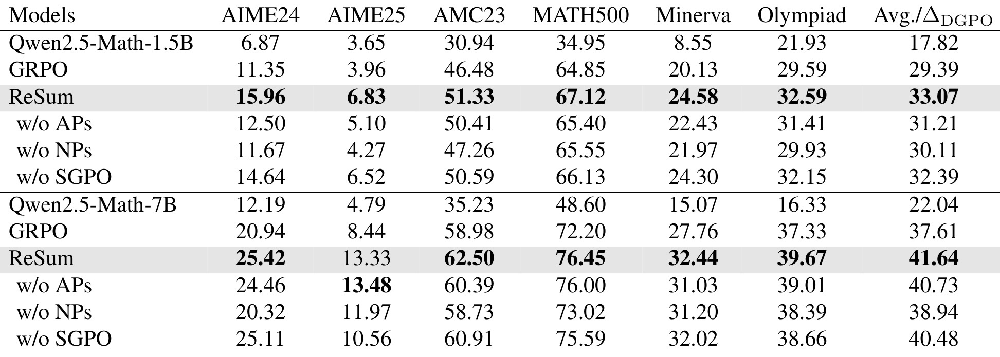

ReSum：把长推理里的“自我总结”训练成可奖励、可分支、可归因的行为
ReSum 这篇论文讨论的是 RLVR 训练中一个很具体但很常见的副作用：模型为了拿到可验证奖励，容易把推理 rollout 拉得越来越长，后半段不断自检、重算、反悔，却不一定带来更高正确率。论文的一作 Xucong Wang 来自中国科学技术大学，工作完成于其在阿里高德 AMAP 实习期间，合作作者主要来自 AMAP, Alibaba Group；论文入口为 arXiv:2606.13316，代码仓库已核验为 https://github.com/xuc865/Resum 。作者的核心判断是：LLM 在长链推理中已经会自然出现 “In summary”“let me recap”“wait, let me re-check” 这类自总结或回看行为，但普通 RLVR 只看最终答案，既不会区分一次总结是否真的修复了错误前缀，也不会鼓励模型在合适的位置主动压缩上下文。ReSum 因此把自总结从一种偶然语言现象改造成强化学习里的训练对象：在自然总结点遮蔽总结短语，在非总结点人工注入总结短语，形成对照分支，再用 summarization-aware advantage 给这些分支做细粒度归因。
1. 背景和问题
RLVR，即 Reinforcement Learning with Verifiable Rewards，近两年被大量用于数学、代码、搜索和 agent 任务，因为这些任务可以通过最终答案、测试用例或环境状态给出相对干净的奖励。它的优点也正是它的问题来源：奖励往往只在 rollout 结束后给出，模型只要最终答对就会得到正反馈，于是训练会鼓励更长、更谨慎、更反复的 Chain-of-Thought。长推理在难题上确实有价值，但如果模型为了追求最终奖励而不断重算已经解决的部分，或者在错误前缀上继续堆砌自检步骤，rollout 长度就会变成噪声放大器。上下文预算被重复推理消耗，早期关键信息被遗忘，后续 token 的不确定性升高，最终出现“越想越乱”的过度推理。
现有长上下文组织方法通常把压缩和整理交给外部模块，例如缓存监控器、文本压缩器、额外 agent 或工程化上下文管理流程。外部方法适合系统落地，但放在 RLVR 训练里会产生两个不舒服的缝隙。第一，它把“什么时候需要整理上下文”的判断外包给模型之外的机制，策略模型本身并不一定学会这个行为。第二，外部摘要可能带来忠实性风险：摘要器删掉的内容、改写的逻辑、插入的解释都可能改变后续推理分布。ReSum 的研究问题因此更窄也更有价值：能不能让 LLM 把它已经会偶尔使用的自总结能力内化为推理控制机制，而不是训练外再接一个压缩器。

Figure 1 是论文成立的动机证据。左侧 pilot study 观察总结短语附近的 token entropy：总结短语之前的位置常处于高熵状态，而总结短语之后 entropy 明显下降，论文文字里给出的幅度约为 35%。这说明模型不是在任意位置机械说“总结一下”，而是在推理状态变得不稳定时更容易触发整理动作。右侧 pilot study 则把错误 rollout 从不同位置截断，再比较是否注入总结短语后的继续生成准确率；结果显示，在错误前缀之后加入总结提示最高能带来约 30% 的 continuation accuracy 提升。两个结果合起来给出一个很强的假设：自总结不是表面话术，它可能是模型内部处理长推理不确定性的控制阀，既能压低后续 token 的不确定性，也能帮助模型从错误前缀中恢复。
这篇论文真正想解决的不是“让回答更短”，而是“让模型知道哪些长推理历史应该被压缩、哪些总结行为值得被强化”。如果只是提示模型“请周期性总结”，模型没有经历对应的强化学习信用分配，很可能把总结当作格式要求，甚至在无意义位置插入模板句。作者在附录里专门比较 naive prompt refinement，结果说明单纯在 prompt 中加入周期性总结指令并不能稳定提升表现，有时还会略降。原因也符合直觉：提示只能告诉模型可以总结，却不能告诉模型一次总结是否真的提高了最终奖励，更不能告诉模型在错误前缀、冗余自检、状态高熵这几类位置之间如何取舍。
还有一个背景层面的细节值得单独说明：ReSum 关注的“总结”并不等同于把答案末尾写成更整洁的 conclusion，而是在推理尚未结束时对已经走过的路径做局部压缩。这个区别会影响训练目标的定义。末尾总结只改变最终回答风格，中途总结会改变后续 token 的条件分布；它可能让模型丢掉噪声，也可能错误地丢掉关键约束。因此，论文选择用分支对照来估计总结的边际收益，而不是人工规定固定步数总结一次。把这一点放回 RLVR 语境看，ReSum 实际上是在补一类缺失的过程动作标签：最终 reward 告诉模型答案对不对，AP/NP 分支则让模型看到“整理上下文”这个动作在不同前缀状态下是否值得保留。
这也解释了为什么 ReSum 的问题定义与长上下文压缩论文不同。外部压缩通常假设上下文已经太长，然后寻找一种更省 token 的表示；ReSum 面对的是训练时不断生成的 reasoning trajectory，它关心压缩动作本身如何从奖励中学出来。换句话说，ReSum 不只是节省上下文窗口，而是在训练策略模型的内部控制习惯：什么时候停下来归纳，什么时候继续展开，什么时候回看前缀里的错误。这个定位使它更接近 reasoning behavior optimization，而不是单纯的 context engineering。
因此，ReSum 把问题拆成两层。第一层是数据生成：从一个 query 的初始 rollout 出发，找到两类可比较的位置。一类是模型自然产生总结短语的位置，说明策略模型自己已经意识到需要整理；另一类是普通非总结位置，训练框架可以人工注入总结短语来测试“如果这里总结会怎样”。第二层是优化目标：不要把所有 rollout 放在一个组里粗暴算相对 advantage，而要区分有总结和无总结的分支，既比较总结分支之间谁更有效，也比较总结与不总结的整体收益差。这样，自总结就从不可见的语言习惯变成了可以被采样、对照、奖励和惩罚的训练信号。
2. 方法
2.1 从 RLVR 和 GRPO 出发的符号设定
ReSum 没有从监督微调开始，也没有先构造人工总结数据，而是直接站在 RLVR 的 policy optimization 框架上。给定训练集中的 query $q \in D$，当前策略模型 $\pi_\theta$ 会自回归生成多个 rollout，记为 $\{o_m\}_{m=1}^{M}$。每个 rollout 最终会得到一个标量奖励 $r_m$。在数学推理任务里，这个奖励可以很简单：答案正确为 1，错误为 0；在其他任务里可以来自 LLM-based reward model 或环境可验证信号。也就是说，ReSum 沿用了 RLVR 最核心的设定：模型不需要逐步标注，只需要从一组 sampled responses 的最终表现里学习。
作者把 GRPO 作为出发点是合理的。GRPO 的关键是 critic-free：它不训练额外 value model，而是在同一个 query 下采样一组回答，用组内均值和标准差对 reward 做归一化，形成相对 advantage。简化地说，如果某个 rollout 的 reward 比同 query 的其他 rollout 更好，它会得到正 advantage；反之得到负 advantage。这个相对化设计适合数学推理，因为同一道题的候选答案之间天然可比，也减少了单独训练 critic 的不稳定。
可以把普通 GRPO 的直觉写成下面这个形式：
符号解释：$o_m$ 是同一 query 下的第 $m$ 条 rollout，$r_m$ 是它的最终任务奖励，$\hat A(o_m)$ 是相对优势。这个公式没有区分 rollout 内部发生了什么，只看最后答对还是答错。因此，如果两条 rollout 都答对，一条靠简洁推理答对，另一条靠大量反复和偶然纠错答对，GRPO 对过程差异的感知很弱。反过来，如果某条 rollout 中间出现了很好的总结行为但最后仍因后续算错而失败，普通 GRPO 也很难给这个总结动作局部正反馈。
ReSum 的方法设计就是围绕这个缺口展开。它没有否定最终可验证奖励，而是在最终奖励之上构造树状分支，让“同一个前缀之后有总结”和“同一个前缀之后无总结”成为可比较的对象。这样，最终奖励仍然是硬事实，但奖励被重新组织成更接近过程监督的信号。读这篇论文时要注意，ReSum 的创新并不只是多加一个 format reward；format reward 只是很小的一部分。真正关键的是通过 AP 和 NP 构造对照分支，再用双组 advantage 让模型学习何时总结、何时不总结。
2.2 自总结触发点：Artifact Points 与 Natural Points
ReSum 的分支点分为 Artifact Points 和 Natural Points。Natural Points，简称 NPs，是模型在初始 rollout 里自然生成总结短语的位置。论文用关键词匹配识别这些短语，例如 “In summary”“to recap”“let me re-check”“wait, let me” 等。NP 的意义是：模型自己已经在此处显露出整理、回看或重构推理状态的倾向。如果把这个自然总结短语遮蔽掉，再让模型从相同前缀继续生成，就能估计这次自然总结是否真的有用。
Artifact Points，简称 APs，则来自非总结位置。训练框架从初始 rollout 中随机选择普通位置，然后人工追加一个总结短语，再让模型继续生成。AP 的意义是反事实试验：原本模型没想总结，但如果在这里插入总结，会不会改善后续 continuation。AP 能覆盖模型尚未学会主动总结的位置，避免训练只强化已有习惯；NP 则保证训练信号来自模型真实生成行为，避免总结完全变成外部注入的格式噪声。

Figure 2 的原图很大，包含示例题、初始化 rollout trees、Artifact Points、Natural Points、带总结和不带总结的分支以及 advantage grouping。这里保留的是原图中直接定义 ReSum 机制的上半部分：输入 query 先产生 initial rollouts，系统在 reasoning tokens 中识别自然总结点，同时从普通 token 位置构造人工总结点，然后形成带 sum 与 no sum 的对照分支。这个可视化有助于理解 ReSum 与普通“提示总结”的区别：提示总结只改变单条生成轨迹的语言风格，而 ReSum 把总结短语作为分叉操作，让同一推理前缀下面出现可比较的后续轨迹。
具体到 branching，AP 和 NP 的处理方向是相反的。在 AP 上，系统拿到前缀 $F^{ap}_{t,j}$，追加一个从总结短语集合中采样的 phrase，例如 “In summary”，然后让策略模型生成后续 $O^{ap}_{t,j}$，得到完整分支 $\tau^{ap}_{t,j}=F^{ap}_{t,j}\circ O^{ap}_{t,j}$。在 NP 上，系统拿到包含自然总结短语的前缀 $F^{np}_{t,j}$，把已经出现的总结短语 mask 掉，再重新生成后续 $O^{np}_{t,j}$，得到 $\tau^{np}_{t,j}=F^{np}_{t,j}\circ O^{np}_{t,j}$。这两个操作刚好回答两个问题：如果模型本来没总结，人工总结是否有益；如果模型本来总结了，去掉它是否会伤害结果。
这个设计比简单的“总结奖励”更稳。只给出现总结短语的 rollout 加分，会诱导模型到处说总结，从而 reward hacking。ReSum 的 AP/NP 分支让总结行为必须经受对照：有总结的分支如果没有提高最终任务奖励，只靠格式奖励无法长期占优；自然总结如果被遮蔽后表现更差，才说明这次总结是有贡献的。换句话说，ReSum 不是奖励“说了总结”这件事，而是奖励“在这个前缀状态下总结改变了后续推理质量”这件事。
2.3 rollout tree 的预算、采样和终止
ReSum 的生成过程不是无限制扩张，而是在固定 rollout budget 下组织成树。对每个 query，先采样 $T$ 条 independent initial rollouts，记为 $\{\tau_t^0\}_{t=1}^{T}$。每条初始 rollout 是一棵 rollout tree $\mathcal T_t$ 的根。随后进入 $j=1,\ldots,J-1$ 的生成循环，每轮在每棵树里选择一个 AP 或 NP 进行分支。总预算记为 $B$，论文中写作 $B=T\times J$，并要求 $B$ 能被 $T$ 整除。
这个预算形式很重要。$T$ 越大，意味着初始路径越多，模型从不同 reasoning starts 中探索总结行为；$J$ 越大，意味着每棵树内部的分支更深，围绕同一初始路径做更多局部反事实比较。论文后面的 Table 5 会显示，单纯增加树深并不一定最好，初始路径多样性和适度分支深度之间存在折中。在 $B=16$ 时，$T=4,J=4$ 的平均效果最好；$T=8,J=2$ 也强于 $T=2,J=8$，说明 rollout diversity 不是可有可无的工程细节。
采样顺序上，作者优先使用 NPs，再用 APs 填满剩余预算。这一点也合理。NP 是模型自然暴露出来的总结意图，和策略分布更一致；AP 是探索性干预，负责发现潜在有用但尚未被模型主动使用的位置。优先 NPs 可以减少过多人为注入导致的训练分布偏移，APs 则负责扩展行为覆盖。所有 branching 只作用于 initial rollouts，而不是对已经生成的 branch 继续套 branch。这样做降低了树结构复杂度，也让每个分支都能回到一个清晰的原始 rollout 前缀，便于 advantage 归因。
如果用过程语言来描述，ReSum 每次训练并不是“生成 16 条互不相关答案”，而是“先生成若干原始解题轨迹，再围绕其中的总结点和非总结点做局部对照试验”。这会改变同样 rollout budget 的信息密度。普通 GRPO 的 16 条答案只提供同题结果排序；ReSum 的 16 条轨迹还告诉模型：某一类前缀在总结后变好，另一类前缀总结后无益，某些自然总结如果被移除就会损害结果。这个额外结构正是论文把它称为 process-level supervision 的原因。
2.4 SGPO 奖励：任务正确性、格式奖励和防止无穷总结
ReSum 的 reward 由两部分组成：任务奖励 $R_A$ 和格式奖励 $R_F$。任务奖励仍然是最终可验证结果，对数学题就是答对为 1、答错为 0。格式奖励则鼓励 rollout 中出现总结行为，但作者给了非常谨慎的权重，NP 的单次鼓励高于 AP，因为自然总结比人工注入更接近模型自主行为。
论文中的奖励定义可以写成：
符号解释：$\tau_{t,e}$ 表示第 $t$ 棵树中的第 $e$ 条 rollout；$N_{NP}$ 是该 rollout 中 Natural Points 的数量，$N_{AP}$ 是 Artifact Points 的数量；$R_A$ 是答案正确性，$R_F$ 是总结格式奖励。分母的作用很关键：它不是让模型每多说一次总结就无限加分，而是对 AP/NP 的贡献做平均，防止模型通过堆叠总结短语刷 reward。NP 权重 0.2、AP 权重 0.05 也体现了作者的偏好：自然总结更值得强化，人工总结只是探索信号。
不过，如果只看这个公式，容易误解 ReSum。格式奖励本身很小，并不能解释主结果中的稳定提升。真正的训练信号来自下一步的 advantage 分组。$R_F$ 的作用更像行为先验：告诉模型总结行为不是完全中性的 token pattern，尤其自然总结可以被承认；但它必须和任务 reward 共同进入 advantage，最终仍要用正确率约束。这样既能避免总结行为被忽视，也不至于让模型只学习“在每段话前后放一个 in summary”。
这个 reward 还隐含了一个工程边界：ReSum 没有要求总结内容被单独打分，也没有训练 summary faithfulness classifier。它把总结的有效性通过后续 continuation 的最终 reward 间接评估。这降低了实现复杂度，但也意味着任务必须有比较可靠的最终验证信号。如果任务奖励很噪，或者答案正确性无法反映中间总结是否忠实，ReSum 的归因会变弱。这一点在复现或扩展到推荐、搜索、开放问答时需要额外注意。
2.5 组内/组间 advantage 与最终优化目标
有了树状 rollout 和 reward 后，ReSum 不把所有分支混在一起算一个普通组内 advantage，而是把分支分为 summarized 和 non-summarized 两组，记为 $G_{sum}$ 与 $G_{nosum}$。对任意 rollout，先在对应组内做 reward 标准化：
符号解释：$G_{sum}$ 是包含总结行为的分支集合，$G_{nosum}$ 是不包含总结行为的分支集合；$\hat A_{sum}$ 比较总结分支之间的相对好坏，$\hat A_{nosum}$ 提供非总结分支的基线。论文进一步把 rollout-level advantage 写成 $\hat A(\tau_{t,e})=\hat A_{sum}(\tau_{t,e})+\hat A_{nosum}(\tau_{t,e})$，并把它赋给 rollout 中所有 token。这个做法的直觉是双重归因：在总结组内部，模型要学习哪个总结位置更好；在总结与非总结之间，模型要学习总结本身是否带来任务收益。
为什么要双组？如果只在总结分支之间比较，模型可能学到“在总结分支里谁更好”，但不知道总结相对不总结是否有绝对优势。如果只比较总结与不总结，又容易忽略不同总结位置之间的质量差异。ReSum 同时保留这两类比较，既防止总结行为沦为格式奖励，也能区分高质量总结和低质量总结。特别是在 NP 上，遮蔽自然总结形成的对照分支可以告诉模型：这个自然总结是否真是 recovery point；在 AP 上，注入总结形成的分支可以告诉模型：这个普通位置是否值得变成未来的主动总结点。
最终优化目标沿用了 PPO/GRPO 风格的 clipped policy-gradient：
符号解释：$\rho_{t,e,i}(\theta)=\pi_\theta(\tau_{t,e,i};\tau_{t,e,<i},q)/\pi_{old}(\tau_{t,e,i};\tau_{t,e,<i},q)$ 是 importance sampling ratio；$\epsilon$ 是 clipping range；$\beta$ 控制相对 reference policy 的 KL regularization；$|\mathcal T_t|$ 是第 $t$ 棵树中的 rollout 数；$|\tau_{t,e}|$ 是 rollout 长度。这个目标里最值得关注的是归一化层级：先对树平均，再对树内 rollout 平均，再对 token 平均。它把 rollout tree 作为训练样本组织单位，而不是简单把所有 token 平铺。
从实现角度看，ReSum 与 Open-R1/DGPO 系代码栈的关系也比较清晰。它不需要重写模型结构，也不需要额外 summary model；主要改动在 rollout generation 和 advantage estimation。训练时温度设为 1.0，最大 completion length 为 4096；评估时 temperature 0.6、top-p 0.95，最大 generation length 仍为 4096。论文的数学实验使用 8 张 NVIDIA H20 GPU，MATH 训练 1 epoch、学习率 $1\times10^{-6}$、batch size 32。对于一个想复现的人，最需要检查的不是模型结构，而是 AP/NP 识别、分支预算是否和 baseline 的 rollout budget 公平，以及 advantage 分组是否严格按 summarized / non-summarized 区分。
2.6 理论视角：总结作为上下文压缩算子
论文的理论部分不复杂，但它给出了 ReSum 的一个有用解释：总结可以被看作上下文压缩算子。设 $H_{<i}$ 是 token $i$ 之前的推理前缀，$S(H_{<i})$ 是在该前缀后接入总结词或总结内容后的新前缀，$p^\star$ 是目标 continuation distribution。如果总结忠实，接入总结后的后续分布不应该偏离目标太远。论文把压缩误差定义为：
符号解释：$\Delta_i$ 衡量同一 query 和前缀位置下，引入总结后目标 continuation distribution 的偏移；$D_{KL}$ 是 KL divergence；$S(H_{<i})$ 不是外部摘要器输出，而是原前缀与总结行为结合后的上下文。这个定义强调“压缩不是删得越多越好”，而是要保留 task-relevant information。如果总结导致 $\Delta_i$ 很大，就说明它破坏了后续推理需要的信息。
进一步，论文定义 summary gain：
符号解释：$R_{sum}(i)$ 是在位置 $i$ 引入总结后的期望回报，$R_{nosum}(i)$ 是不引入总结的期望回报，$G_i$ 衡量该位置总结带来的边际收益。理论命题的表达是：若总结是 $\delta$-faithful，即 $\Delta_i\leq\delta$，并且 reward 对 continuation distribution 的小变化局部稳定，那么总结分支不会降低期望回报；当被移除的上下文主要是冗余内容时，它会严格提高回报。这个命题没有试图证明所有总结都好，而是说明了 ReSum 应该学习“何时总结”：只有忠实且去冗余的总结才应该获得正增益。
这也解释了为什么 ReSum 要对 AP 和 NP 同时建分支。NP 给出模型自己认为值得总结的位置，通常更可能接近高熵或错误恢复点；AP 则测试其他位置的潜在 $G_i$。如果某个 AP 的总结分支表现更好，它会把原本模型不会总结的位置纳入未来行为；如果某个 NP 遮蔽后表现不差，说明这次自然总结可能只是口头习惯，不应该被过度强化。理论视角、分支机制和 advantage 设计在这里是闭合的：总结是压缩算子，分支估计压缩收益，双组 advantage 把收益变成训练信号。
3. 实验结果
论文实验覆盖了数学推理主任务、跨 backbone 迁移、与其他 policy optimization 方法的兼容、多模态 GEOQA-8K、rollout tree 结构、训练动态、输出长度、组件消融、难度分层、prompt refinement 对比、显著性检验和效率分析。主线很清楚：ReSum 不是只在一个 backbone 或一个 benchmark 上提高，而是在多种模型和优化器组合上稳定超过 GRPO/DGPO；同时，它没有用更长 rollout 换准确率，反而在训练后期降低了平均输出长度。

Table 1 是 headline result。以 Qwen2.5-Math-7B 为 backbone，Base Model 平均 22.04，GRPO 平均 37.61，DGPO 平均 39.79，而 ReSum 达到 41.64，相比 GRPO 的增量为 +4.03，相比 DGPO 也有明显提升。单项看，AIME25 从 GRPO 的 8.44 提到 ReSum 的 13.33，MATH500 从 72.20 到 76.45，Minerva 从 27.76 到 32.44。这个表支持论文的第一层结论：在强数学模型和多个难度 benchmark 上，自总结分支带来的过程监督可以超过单纯 outcome-level reweighting。更细地看，ReSum 不是只在一个容易刷分的数据集上变好：GSM8K、MATH500、AIME24/25、Minerva、OlympiadBench 的相对变化方向基本一致，这说明它改善的是推理过程管理，而不是某类题目的 prompt 偶然适配。对线上推理系统而言，这类“平均收益不靠单点支撑”的结果更重要，因为生产流量里的题型、上下文长度和错误模式通常比单一 benchmark 更混杂。

Table 2 回答迁移性问题。Qwen2.5-Math-1.5B 上，GRPO 平均 29.39，DGPO 30.71，ReSum 33.07；Qwen2.5-3B 上，GRPO 25.47，DGPO 27.19，ReSum 28.81；DeepSeek-Math-7B 上，GRPO 14.91，DGPO 16.53，ReSum 17.32。这里最值得注意的是小模型收益。小模型容量有限，更容易在长链推理中遗忘早期状态或陷入重复自检，ReSum 的自总结激励相当于训练一种内部上下文整理习惯，因此对 1.5B 和 3B 的相对帮助很明显。DeepSeek-Math-7B 的绝对基线较低，但 ReSum 仍超过 DGPO，说明方法不是只对 Qwen2.5-Math 系列过拟合。

Table 3 展示 ReSum 不是一个和其他 policy optimization 方法互斥的替代品。以 GPG 为底座，+DGPO 到 38.92，而 +ReSum 到 40.76；以 DAPO 为底座，+DGPO 到 39.91，+ReSum 到 40.88；以 GSPO 为底座，+DGPO 到 39.32，+ReSum 到 40.17。这个结果的含义是：GPG、DAPO、GSPO 主要改变 policy-gradient loss 或 token/group weighting，ReSum 改变的是 rollout 组织和 summarization-aware advantage。两者关注层级不同，所以可以叠加。工程上，这说明 ReSum 更像一个 process-signal 插件，而不是只能和某个固定 RLVR baseline 绑定。
论文还在 GEOQA-8K 多模态任务上做了扩展。Qwen2.5-3B-VL-Instruct 的 base 为 39.79，GRPO 后为 57.43，DGPO 为 59.95，ReSum 达到 62.04，相比 GRPO +5.61。虽然视觉问答涉及图像编码，但最终仍有长文本推理链，模型同样会出现冗余、反悔和上下文漂移。ReSum 在这里有效，说明自总结行为至少不只服务纯数学符号推导，也可能适用于需要多步语言解释的 multimodal reasoning。不过，论文没有把 ReSum 放到开放式 agent 或推荐排序任务上测试，因此不能直接推出它对所有长上下文系统任务都有效。

Table 5 是理解 ReSum 训练成本和结构选择的关键表。固定 $B=T\times J$ 后，不同 $T$ 和 $J$ 的组合表现不同。$B=2$ 时，$T=2,J=1$ 甚至低于 GRPO，说明样本太少时分支开销大于收益。$B=4$ 时，$T=4,J=1$ 比 $T=2,J=2$ 更好，表明初始路径多样性很重要。$B=16$ 时，$T=4,J=4$ 达到最高平均 28.81，超过 $T=8,J=2$ 的 28.55 和 $T=2,J=8$ 的 27.98。这个现象支持作者的解释：ReSum 需要同时看到多条原始推理路径和一定数量的局部分支，太偏向宽度或深度都不是最优。读这张表时还要注意预算口径：如果只把分支数加大而原始路径太少，模型看到的是同一个早期推理状态附近的局部扰动，难以覆盖题目本身的多种解法；如果只增加原始路径而缺少局部分支，又无法估计某个总结位置到底带来了正收益还是负收益。因此 $T=4,J=4$ 的优势可以解释为 exploration 与 local credit assignment 的折中。

Figure 3 用曲线展示训练和评估动态，比较 ReSum 与 DGPO 在 Qwen2.5-Math-1.5B 和 7B 上的 task reward。图中 ReSum 曲线整体高于 DGPO，尤其评估曲线能够保持更高上界，说明主表结果不是最后一次 checkpoint 的偶然波动。论文也报告输出长度动态：ReSum 初期可能因为模型还不熟悉总结行为而生成更长，但训练后期在训练和评估阶段都降低平均 rollout length，最终相对 DGPO 约减少 18.6%。这点很重要，因为它把 ReSum 与“更长思考换更高正确率”的路线区分开来：ReSum 的目标是让模型更早整理上下文、减少重复试错，而不是让它写更多文字。曲线还暗示一个训练稳定性收益：如果总结行为只是格式模板，训练 reward 可能上升但评估 reward 不跟随；这里评估侧同向上移，说明模型学到的压缩/恢复策略至少能迁移到未见题目。对部署来说，这比单纯降低 token 更有价值，因为它同时减少服务成本和长链错误累积。

Table 6 是组件归因。Qwen2.5-Math-1.5B 上，完整 ReSum 平均 33.07；去掉 APs 后降到 31.21，去掉 NPs 后降到 30.11，去掉 SGPO 后为 32.39。Qwen2.5-Math-7B 上，完整 ReSum 41.64；去掉 APs 为 40.73，去掉 NPs 为 38.94，去掉 SGPO 为 40.48。最明显的是 NPs：去掉自然总结点损失最大，说明模型自身产生的总结行为确实是最有价值的训练锚点。APs 的贡献也存在，它提供对未总结位置的探索。SGPO 的损失相对小一些但仍稳定，说明树状分支本身已经带来过程信号，而双组 advantage 进一步提升了信用分配质量。
附录结果补充了两个边界。第一，prompt refinement 不等于 ReSum。作者把“请周期性总结你的进展并反思方法”加入 prompt，结果在 Qwen2.5-3B 和 DeepSeek-Math-7B 上并没有稳定提升，甚至局部下降；而 ReSum 在同一批 backbone 上显著更好。这说明总结行为需要训练中的反事实分支和 reward 归因，而不是只靠指令。第二，显著性检验显示 ReSum 相对 DGPO 在各 backbone 和数据集上的 p-value 全部低于 0.05，平均 p-value 大约在 0.0064 到 0.0152 之间，支持结果不是采样噪声。效率表则显示 ReSum 因识别和执行 branching 会有额外开销，论文概括为相对 DGPO 约 13% overhead；但随着训练进行，模型学会更合适地总结，输出长度下降会抵消一部分生成成本。
总体来看，实验链条比较完整：Table 1 证明主任务有效，Table 2 证明跨模型有效，Table 3 证明可叠加，Table 5 解释结构选择，Figure 3 和长度动态说明训练过程稳定，Table 6 证明核心组件各自有贡献。相对薄弱的地方是任务类型仍偏数学和视觉数学，开放式搜索、代码 agent、推荐系统长链决策这些场景还没有被覆盖；另外，AP/NP 依赖关键词匹配，是否能覆盖不同语言、不同模型风格、不同领域的“隐式总结”行为，也需要后续验证。
4. 总结
ReSum 的贡献可以概括为一句话：它把 LLM 长推理中偶然出现的自总结，训练成了可分支比较、可奖励归因、可降低 rollout 长度的内部控制行为。它不是外接摘要器，也不是简单 prompt engineering，而是在 RLVR 采样阶段把总结点变成反事实实验点，再在优化阶段用 summarization-aware advantage 区分总结分支和非总结分支。这个设计抓住了 RLVR 的一个真实痛点：最终奖励可以推动模型想得更久，却未必教会模型什么时候应该整理自己的思路。
我认为这篇论文最值得借鉴的地方有三点。第一，它没有把“长推理过长”处理成推理时截断问题，而是回到训练信号本身，重新定义哪些中间行为值得奖励。第二，AP/NP 的互补设计很干净：NP 负责利用模型已有的自然总结倾向，AP 负责探索模型还不会主动总结的位置。第三，SGPO 的双组 advantage 把总结行为从格式偏好提升为过程比较，避免模型仅仅模仿 “In summary” 这类短语。
局限也比较明确。第一，关键词匹配可能漏掉语义上等价但表面不含总结短语的回看行为，也可能把礼貌性或模板化短语误判为总结。第二，实验主要在数学推理和 GEOQA-8K 上，尚不能证明它对开放式 agent、检索增强生成、代码修复或推荐决策链同样有效。第三，ReSum 增加了 rollout branching 开销，论文报告约 13% overhead；在昂贵模型或高并发在线训练环境中，这部分成本需要和长度下降收益一起评估。第四，理论命题依赖 summary faithfulness 和 reward local stability，现实任务中如果总结压缩掉关键状态，或者 reward 本身噪声较大，分支归因可能会误导策略。
后续如果继续跟进，我会优先看三个方向。其一，把 NP 识别从关键词扩展到语义级行为检测，例如结合 entropy spike、attention pattern 或轻量 classifier，减少语言模板依赖。其二，把 ReSum 放到工具调用和搜索式 agent 中测试，因为这些场景更容易出现错误前缀和冗余回看，也更需要内部状态整理。其三，研究 summary content 的忠实性约束，而不只是总结触发时机：如果模型学会在正确位置总结，但总结内容错误，后续推理仍会被污染。总体上，ReSum 是一篇切口很好的 RLVR 论文，它把“模型自己整理推理轨迹”变成了可训练对象，也为长上下文推理从外部压缩走向内部自管理提供了一个可复现的框架。